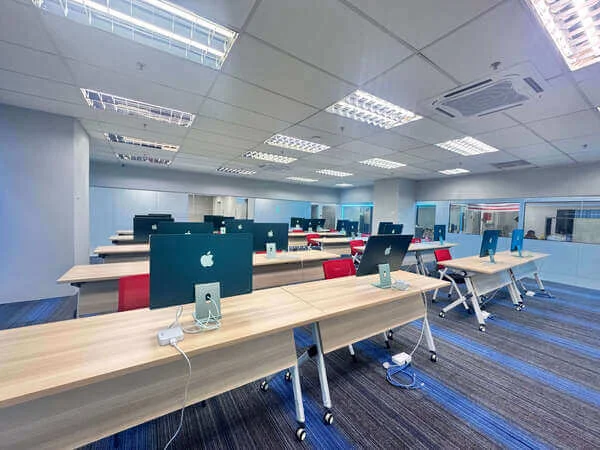
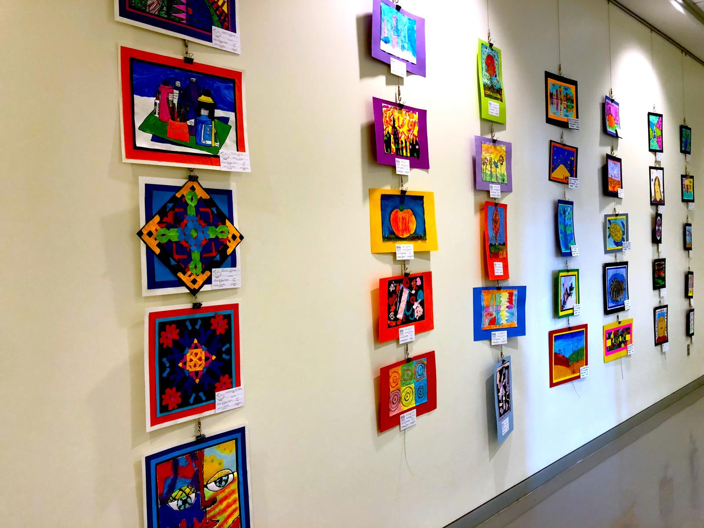
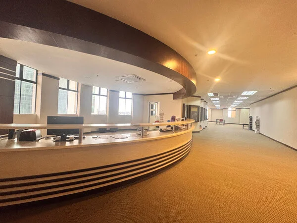
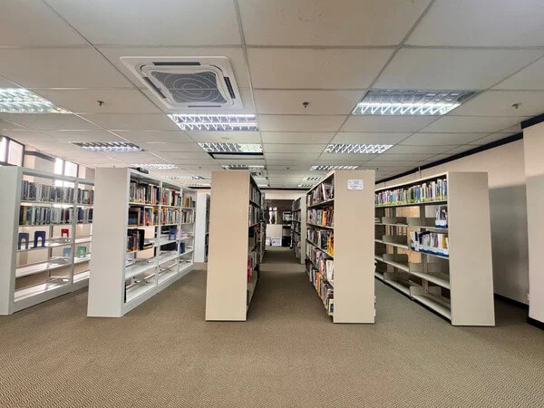

University guide for Bangladeshi applicants
Explore ALFA University College in Subang Jaya. Match the exact qualification and study mode to the official programme source before comparing entry requirements, intakes or accreditation.
ALFA University College is based in Subang Jaya, Selangor. Compare the exact qualification, study mode and programme source before choosing a course.
ALFA’s official contact page lists its current address. Use the Malaysian Qualifications Register to check the individual qualification rather than treating institutional marketing claims as accreditation.




ALFA’s official contact page lists 13, Persiaran Kewajipan, USJ 1, Subang Jaya. Confirm the programme’s teaching location before arranging accommodation or travel.
13, Persiaran Kewajipan, USJ 1, 47600 Subang Jaya, Selangor
Dedicated floors for Architecture & Design
Mock classrooms for teaching practice
Near BRT & LRT USJ 7 Stations
The official programme page and Malaysian Qualifications Register serve different purposes. Confirm the next available intake and any entry conditions for your programme; do not treat an old printed registration month as proof that accreditation has ended.
On a small screen, scroll the table horizontally to view every column.
| Qualification | Institution and location | Study information | Official evidence | Fee section |
|---|---|---|---|---|
| Diploma in Business Administration | ALFA University College Subang Jaya, Selangor | Full-time; 2.5 years. Published intake months: January, May, September. Availability requires confirmation. | Official programme information | Diploma fee section |
ALFA publishes intake and study-mode information on individual programme pages. Use the calendar for your selected programme; do not apply a diploma intake calendar to every postgraduate or research course.
Ask for an assessment of your Bangladesh SSC/HSC or previous diploma against the exact programme. Check subject requirements, English evidence and whether a foundation or diploma pathway is appropriate before choosing a start date.
Prepare your qualification certificates, subject transcripts and any English-test results for assessment. Confirm the exact programme, campus, study mode, academic conditions and international application deadline together. This guide does not establish a universal HSC grade or IELTS waiver.
Plan the student visa document requirements
A scholarship or adjusted-fee entry in a schedule is not proof that every applicant qualifies. Request the named award, eligible programme and intake, application deadline and continuation requirements. Keep the approved award and final fee offer together. Read the Malaysia scholarship guide.
View ALFA University College international tuition fees and payment notes. The separate fee chart explains the published payment periods and additional charges for financial planning.
ALFA's official programme website lists its address at 13, Persiaran Kewajipan, USJ 1, Subang Jaya, Selangor. Confirm your programme's teaching location before arranging accommodation.
Match the exact qualification title and programme reference with the Malaysian Qualifications Register or the relevant provisional accreditation record. An institution-level ranking does not replace programme accreditation.
Verified . Each figure below names its ranking edition.
“Not listed” refers to the named QS table. “Not verified” means we could not confirm a position for that edition; it does not establish that the institution is unaccredited.
Malaysia positions are calculated among the 32 institutions listed by QS under Malaysia in its World 2027 table. This is not a separate government ranking. An = sign marks a tie. Institutions in the same world-rank band share a national position range because their exact order is not published.
QS World and QS Asia use different methods. Overall university positions do not establish the ranking of a particular BBA, IT, MBA or other program.
QS World University Rankings 2027 - official results spreadsheet (v1.1) · QS World University Rankings 2027 - release corrections · QS Asia University Rankings 2026 - Malaysia
Alfa University College has no institution entry in the published QS World University Rankings 2027 table.
Sources: QS World University Rankings 2027 - official results spreadsheet (v1.1) · QS World University Rankings 2027 - release corrections
A QS Asia University Rankings 2026 position for Alfa University College has not been verified in our sources.
Alfa University College has no separate Malaysia position in the QS World 2027 table because it has no institution entry listed under Malaysia. This is a position within the QS World table, not a separate government ranking or a QS Asia position.
Sources: QS World University Rankings 2027 - official results spreadsheet (v1.1) · QS World University Rankings 2027 - release corrections
QS Stars and SETARA are ratings, not numerical positions in a QS league table. A subject ranking applies to that subject, and a partner university rank belongs to the named partner. Check the institution, ranking system and edition before comparing.
Sources: QS Stars rating system